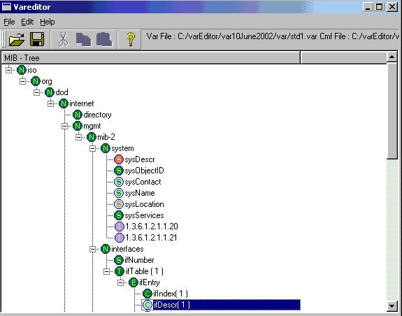

Var File Editor is a menu-based editor designed to manipulate the variable file tree.
The variable file tree is a graphical (tree) representation of the variable file and the associated MIB file. There are different icons associated with Address / Scalar / Instance / Entry / Table / Column nodes. The tree distinguishes (with a different color) nodes that are in the MIB tree but do not have instances in the Variable tree. In addition, it also distinguishes nodes that are in the variable tree but not in the associated MIB file. User can select multiple nodes at the same time and perform different operations on them.
· Be able to create var files.
· Be able to view and modify var files.
· Be able to associate “simulator” actions with variable changes.
1) Tree representation of var File
2) Different menu options are given for
File - open ,save, save as
Edit - create instance ,create modify instance ,cut ,copy ,paste ,dynamic
row template
Help - indicates additional information about var editor
3) Tool bar for edit operations such as Cut ,Copy ,Paste ,Help
4) Indicates currently selected var file and mib file.
· Allows loading of existing variable files.
· Allows creation of new variable files.
· Represents the var file as a tree (graphically).
· The graphical view signifies the type of variables with different icon
· Represents columnar variables as tables in which user can add/delete/modify.
· Allows addition of new variable instances with supported value types.
· Allows creation of variables at nodes that exist in MIB files but not in the Variable files.
· Allows deletion of variable instances and rows.
· Allows modification of the value type for scalar as well as columnar variables.
· Allows creation and deletion of Dynamic row Template.